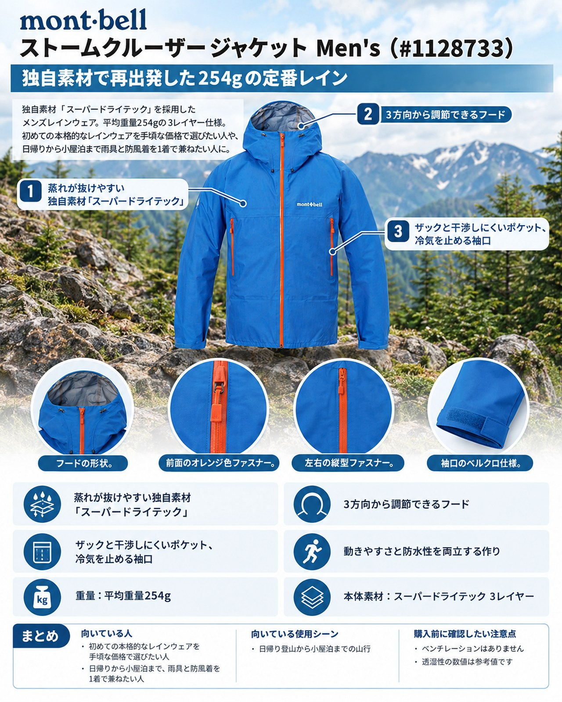

10月30日は再び雨の予報です。28日からの強い寒気で高い山は結氷・冠雪が進み、日没も17時前後と早くなりました。この時期の雨は冷たく、濡れたまま風に当たると一気に体温を奪われます。レインウェアは「雨具」であると同時に、冷たい風を止める一枚でもあります。
導入：どんな人・どんな山行に向くか
10月30日は再び雨の予報です。28日からの強い寒気で高い山は結氷・冠雪が進み、日没も17時前後と早くなりました。この時期の雨は冷たく、濡れたまま風に当たると一気に体温を奪われます。レインウェアは「雨具」であると同時に、冷たい風を止める一枚でもあります。
モンベルの「ストームクルーザー ジャケット Men's」（品番 #1128733）は、1982年の初代から改良を重ねてきた同社の看板レインウェアです。2025年のモデルでは、防水透湿素材を長年のゴアテックスからモンベル独自の「スーパー ドライテック」に切り替えました。これまで当サイトで紹介した海外ブランドのシェルとは違い、税込22,000円という手に取りやすい価格が大きな特徴です。初めて本格的なレインウェアを買う人や、日帰りから小屋泊まで1着で幅広く使いたい人に向いています。
基本スペック
| 項目 | 内容 |
|---|---|
| 商品名 | ストームクルーザー ジャケット Men's |
| 品番 | #1128733 |
| 価格 | 22,000円（税込、公式オンラインストア表示） |
| 重量 | 平均重量254g |
| 素材 | スーパー ドライテック 3レイヤー |
| 表地 | 30デニール・バリスティック®ナイロン・リップストップ |
| 耐水圧 | 20,000mm以上 |
| 透湿性 | 40,000g/m²・24hrs（JIS L-1099B-1法・参考値） |
| 収納サイズ | 8×8×15cm（1L）、スタッフバッグ付き |
| サイズ | XS、S、M、L、XL、XXL、M-R、L-R（Rはゆったり幅） |
| カラー | ブルーグリーン、ブラック、ブルー26、レッド、イエロー |
蒸れが抜けやすい独自素材「スーパー ドライテック」
表地と裏地の間に、モンベル独自の防水透湿素材「スーパー ドライテック」を使っています。使った人の声では、強い雨を何度も浴びても防水性・撥水性とも問題なく、運動時の蒸れが抜ける感覚も期待以上だったとされています。裏地は保水しにくい高密度ニットで、半袖の上に着てもべたつかないという声もあります。歴代モデルを着てきた人からも、10代目が最も着心地がよいという評価があります。
3方向から調節できるフード
フードは「トライアクスルフード」で、前後のドローコードで顔周りと奥行きを、ベルクロでひさしの高さを調節できます。使わないときは襟裏のループとベルクロでまとめられます。ヘルメットの上から被れる点を挙げる声もあります。冷たい横殴りの雨でも視界を保ちやすい作りです。
ザックと干渉しにくいポケット、冷気を止める袖口
ジッパー付きのポケット2個は、バックパックのハーネスやテープと干渉しにくい位置にあります。袖口は「アルパインカフ」でフィット感を調節でき、両裾もドローコードで絞れます。雨だけでなく、晩秋の稜線で吹き込む冷気を抑えるのに役立ちます。
動きやすさと防水性を両立する作り
独自のカットパターン「K-Mono CUT」で縫い目を減らし、袖口には保水しにくい接着加工を施しています。縫い目が少ないことは、防水性の面でも利点があるとされています。表地は光沢を抑えたマットな質感で、雨の日以外に羽織りやすいという評価もあります。
デメリット・注意点
- ベンチレーションが無い：脇の下などの通気ファスナーはありません。急登で汗をかくときは、前のファスナーを開けて調節する必要があります。
- 透湿性の数値は「参考値」：公式ページの透湿性は測定法を明記した参考値です。別の測定法では大きく異なる数値が出たという声もあり、条件次第で蒸れは感じます。数値だけで「蒸れない」と考えないほうが安全です。
- 保温力は無い：薄い3レイヤーのシェルなので、それ自体に暖かさはありません。朝0℃前後まで下がる時期は、下にフリースや化繊インサレーションを重ねる前提で考えましょう。
- ポケットは2個だけ：胸ポケットは無く、地図やスマートフォンを出し入れしやすい位置の収納を求める人には物足りない場合があります。
向いている人・向いていない人
◎向いている人
- 初めての本格的なレインウェアを、手頃な価格で選びたい人
- 日帰りから小屋泊まで、雨具と防風着を1着で兼ねたい人
- 普段着より大きめのゆったりサイズ（M-R、L-R）を選びたい人
△向いていない人
- 発汗が多く、脇のベンチレーションで細かく温度調節したい人
- 積雪期の山で使う、厚手で頑丈なハードシェルを探している人
まとめ
ストームクルーザー ジャケットは、独自素材「スーパー ドライテック」への切り替えで、254gの軽さと22,000円の価格を両立した定番レインウェアです。調節の細かいフードや干渉しにくいポケットなど、山で使う細部がよく考えられています。ベンチレーションが無いこと、保温着を重ねる前提であることを理解して選べば、冷たい雨が続く晩秋の山行で頼れる1着になります。
この記事で紹介した商品
価格・重量・在庫は各ブランド公式サイトの記載（確認日つき）にもとづきます。商品を押すと、購入先を選べます。
この記事にはアフィリエイト広告が含まれます。リンク先での購入により、当サイトが報酬を受け取る場合があります。山行の前には、最新の気象とルートの状況を必ずご確認ください。